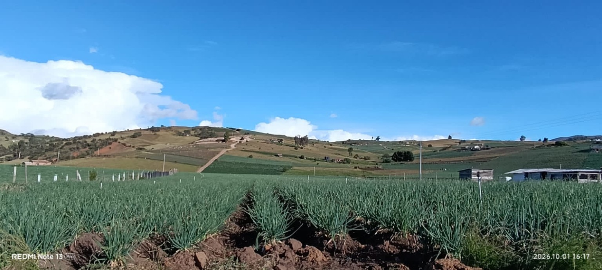
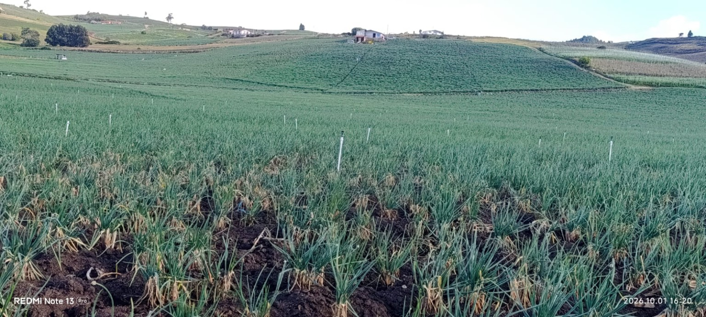

Distrito de riego ASOTOQUECHA
Organización de usuarios del distrito de adecuación de tierras de pequeña escala de Toquecha y Tota, ubicada en el municipio de Tota, Boyacá.
165usuarios
TotaBoyacá
5cultivos principales

Quiénes somos
ASOTOQUECHA es una asociación de usuarios del Distrito de Adecuación de Tierras de Pequeña Escala de Toquecha y Tota. La organización reúne a 165 usuarios y trabaja en beneficio de la actividad agrícola de la comunidad.
El distrito se encuentra en Tota, Boyacá, territorio donde se desarrollan diferentes actividades agrícolas.
Nuestros cultivos
🥔 Papa
🧅 Cebolla cabezona
🌱 Cebolla larga
🌿 Arveja
🍓 Fresa
Galería

/div>Contacto
ASOTOQUECHA
Asociación de Usuarios del Distrito de Adecuación de Tierras de Pequeña Escala de Toquecha y Tota
NIT: 900.210.775-5
Dirección: Tota, Boyacá, Colombia
Correo electrónico
asotoquecha@hotmail.com